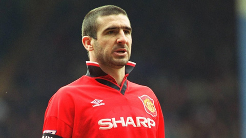
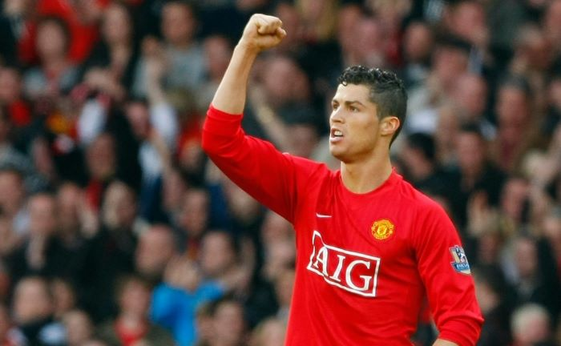

Hành trình của những huyền thoại tại Nhà hát của những giấc mơ!
George Best là một trong những cầu thủ xuất sắc nhất mọi thời đại của Manchester United. Được biết đến với kỹ thuật điêu luyện và tốc độ tuyệt vời, ông đã giành Quả bóng vàng châu Âu năm 1968 và là nhân tố quan trọng trong chức vô địch Cúp Châu Âu cùng MU.
Là một trong những biểu tượng lớn nhất của Manchester United, Sir Bobby Charlton là cầu thủ ghi nhiều bàn thắng nhất trong lịch sử CLB cho đến năm 2017. Ông cũng là thành viên của đội tuyển Anh vô địch World Cup 1966 và từng giành Quả bóng vàng năm đó.
Eric Cantona là biểu tượng của thời kỳ thành công rực rỡ của Manchester United dưới thời Sir Alex Ferguson. Với cá tính mạnh mẽ và khả năng ghi bàn đỉnh cao, ông đã giành được nhiều danh hiệu quốc nội cùng đội bóng và được NHM yêu mến gọi là “King Eric”.
Cristiano Ronaldo gia nhập Manchester United vào năm 2003 và nhanh chóng trở thành một trong những cầu thủ hàng đầu thế giới. Anh đã giành được nhiều danh hiệu tại Old Trafford, bao gồm 3 chức vô địch Premier League và 1 Champions League, trước khi chuyển đến Real Madrid.
